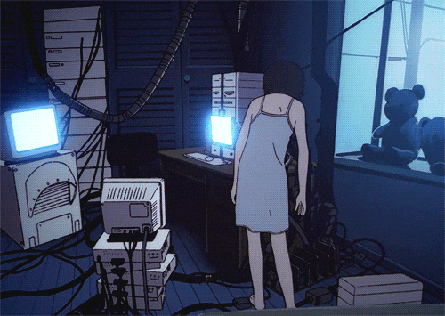
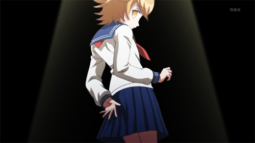

Introduccion
“Durante mucho tiempo pensé que la vida era solo una desesperada carrera por sobrevivir y vencer. No tenía un enfoque del futuro, siempre tenía que elegir en el momento. Siempre, tenía que sobrevivir el momento.”
Aquella que arde

INTRODUCCION
Abro este blog con esta confesión, Soy Trans, pero también ¿soy una ingeniera?
Y de eso ira el blog, acerca de mi ingeniería y de mi manera de ver mundo de manera “ingenieril” (Si es que existe esa palabra) enfocado al mundo LGBTQ+, en especial a mi transición. Y no solo voy a estar hablando acerca de la comunidad, sino que también quiero hablar de tecnología, de las implicaciones de la tecnología, de cómo cambio mi vida.
Muchos/as/es/is (si Stallman me lo permite) se preguntarán, ¿Por qué combinar ambos temas?, no tengo respuestas absolutas realmente, pero creo que la historia de cómo me convertí en una ingeniera pudiera ayudar, pero para explicar por qué me convertí en ingeniera, tengo explicar el asunto Trans, puesto que el elegir ser una ingeniera es una consecuencia de ser Trans.
Inicio confesando mi nombre es Lain, tengo 22 años, dos carreras universitarias, una con título, trabajo en ingeniería en software, alimento a mi mascota, hago ejercicio, preparo la comida, ayudo en mi casa, soy una persona normal, excepto que soy no binarie.
Y lo primero que te preguntaras al verme es si soy un chico o una chica, y a veces es difícil contestar esa pregunta para mi, tengo que confesar que algunas veces más que otras, pero puedo decirte una cosa con seguridad, no soy ninguno de los dos, y sobre todo, nunca lo fui.
Hasta los 8 años, era incapaz de reconocerme a mí, y a mi cuerpo en las fotografías, sabía que yo estaba ahí, pero no me podía reconocer, una especie de disociación entre lo que mi cerebro/alma esperaba ver y lo que realmente veía.
No es el único recuerdo de mi propio cuerpo ahogándome en una disolución solo por existir, tengo largos y confusos días de mi niñez, en donde no recuerdo que hacía pero de pronto todo parecía sentirse como si fuera una película, como si nada fuera real.
Y no solo tengo que confesar que era mi cuerpo, tambien fue mi entorno, recuerdo una vez que una vecina me regaló una pulsera de cuencas azules y transparentes, a mi me parecio linda y quería conservarla, quería guardarla en mi muñeca para siempre, pero mi padre no pensó lo mismo, y no me dejo hacerlo, de hecho también me prohibió la palabra para siempre, al dia de hoy, muchos años después, tengo problemas para decir “Linda”.
Simplemente no me dejo conservarla porque “El azul es un color de hombres” y “las pulseras son cosas de mujeres”. Entonces pregunté, ¿Por qué?
Y entonces me pregunté a mi, ¿Qué es ser un hombre?, ¿Qué es ser una mujer?, ¿Puede ser una mujer?, ¿Qué define lo que somos?
Realmente no he encontrado una respuesta directa a estas preguntas, una verdadera respuesta, una respuesta real, una que no tenga excusas, que no tenga puntos ciegos, una donde la regla no se rompa.
Podemos decir que un hombre es una persona que deja preñada a otra, pero hay hombres sin testículos. Podemos decir que una mujer es una persona que queda preñada, pero hay mujeres sin matriz.
Y siempre que llego a cuestionarme estas preguntas llego lo más lejos que puedo, tengo debates contra mí, contra mi mente, y contra el internet, investigo e investigo pero todos los puntos son debatibles, todos los argumentos tienen una falla.
Y el único concepto que me ha satisfecho es “La Otredad”. La otredad es un término utilizado en filosofía, sociología, psicología, antropología y psicoanálisis (para mi desgracia) entre otros, que nos habla acerca de que las otras personas, son tan profundas como tú.
La otredad es lo que nos ayuda a ver que las otras personas son, de hecho, personas.
Siendo el género un “constructo social” (al igual que el dinero, la ropa, la religión, la sociedad, el capitalismo, el comunismo, la democracia, los valores, la moral, etc.), la otredad toma el papel más importante, puesto que, es el otro quien nos asigna nuestro género.
Es por eso que lo primero que te preguntas al verme es si soy un chico o una chica, intentas leerme con la mirada, te fijas en mi cara, bajas a mi cuello, a mis hombros, a mi pecho, por mi estómago, por mis piernas, mis muslos y terminas en mis zapatos, te quedas con más dudas que con respuestas, porque quiero que así sea.
Podría ponerme maquillaje, una falda, y acomodarme el pecho en un sostén con relleno, y así verme como una chica, cosa que ya he hecho. También podría cubrirme el pecho con vendas, engrosar la voz, ponerme unas plataformas y ser un chico, cosa que también he hecho.
Pero no soy ni un chico ni una chica.
Y esto no hace que el genero este mal, no hace que el hecho de que algo sea un constructo social este mal, la preocupacion por la vida del otro, el no asesinato, es un constructo social, y esta bien.
El hecho de que sea un constructo social y que yo sea parte de la sociedad quiere decir que yo mando, quiere decir que tú mandas, que todas las personas del mundo mandamos. Pero al mismo tiempo de ser un concepto social es un concepto individual, mi género y mi percepción de ser un hombre y una mujer son míos, y mi percepción es que si tu me dices que lo eres, lo eres. Yo y las personas trans existimos porque la sociedad existe, porque los individuos existen, porque dentro de cada una de las personas existe una conciencia propia e individual.
Pero volvamos a mi, porque es mi blog, tengo que confesar que hasta hace poco sabía que era trans y ya, sabía que se puede ser trans y estar fuera del binario, pero no sabía que yo lo era.
También tengo que confesar que no recuerdo bien como me di cuenta que soy trans, es un recuerdo borroso, tenue y sublime, pero es tosco, doloroso, me arrastra y me destruye, como un choque con una locomotora o como si el mar reclamara mi nombre jalandome entre las olas.
Tenía 12 años, era un poco funcional, iba a la secundaria y hacia lo que pudiera para no meterme en problemas, leía lo poco que caía en mis manos y no tenía muchas personas con las que pasar el rato, pero estaba estudiando, era joven y tenía para comer, lo que me hacía tener paz. Las cosas en mi casa no iban muy bien, y fueron la antesala a muchos de los problemas que yo y mi familia tendríamos en años posteriores.
No sé como, ni porque empezo, pero inicie en el travestismo, con ropa fea, vieja y sucia por partes iguales, olia a moho y humedad, estaba guardada en un baño hecho de madera vieja que no tenia un lavamanos y mucho menos una regadera desente, un tubo de agua arriba de un inodoro despues de un largo pasillo que se usaba de bodega.
Ese pasillo estrecho hecho de madera a punto de caerse que mi familia llamaba baño, fue mi escondite por mucho tiempo, después de un dia dificil iba y me escondía para vestirme, fingía que me bañaba o que tenía alguna enfermedad y solo me quedaba ahí, en silencio, en paz, usando algo que no podían verme usar afuera, y al mismo tiempo en el que me excite, encontré algo mucho más grande, paz, paz y tranquilidad dentro de una tormenta que apenas e iba empezando.
Paz entre la disociación acerca de lo que me gustaba usar, lo que debía usar y lo que usaba todos los días.
Un vacío que no podía llenar de otra manera, se llenó entre esa falda vieja y esa playera de la secundaria, no me parecía bonita esa ropa, no tenía celos de su uniforme o de su vestimenta, no eran bonitos pero me hacían sentir bien.
A diferencia de muchos clichés entre otras personas trans, no tenía celos de las mujeres, de la ropa que usaban, de la manera en cómo las tratan, o cómo se sentían. Estoy de acuerdo que me parecían lindas, apropiadas y demás adjetivos positivos, pero lejos de eso el hecho de ponerme esa falda, andar con ella, verme al espejo, y, sobre todo, el no poder usarla todo el día y el dolor que eso me provocó, me humaniza.
Toda mi vida hasta ese momento pocas veces me había sentido como parte de la raza humana, ya sea por mi estatus socioeconómico, por mi color de piel o por mi autismo, por los cuales la familia de mi madre no me aceptaba como persona, para sus integrantes solo era una pequeña mascota, tambien en mi entorno en el cual solo era un número más (como en la secundaria), o con mis padres que por ese tiempo por cuestiones económicas tuvo que ser así, ya sea por mis compañeros de escuela o por mis maestros, para los cuales solo era un número más.
Esa falda me permitió brindarme algo que no sentí en mucho tiempo, me permitió sentirme real. El sentimiento de placer al usarla y el dolor cuando me la quité, me humanizaban, y fue ahí donde me di cuenta que era trans, porque ser trans me humanizo.
No supe que era trans en ese momento y mucho menos sabía que NO terminaria perteneciendo al binario de género, sólo sabía que era diferente, pero quería entender lo que era, es ahí donde inició una larga lucha por entenderme a mí, al entorno que me rodeaba, y a la realidad.